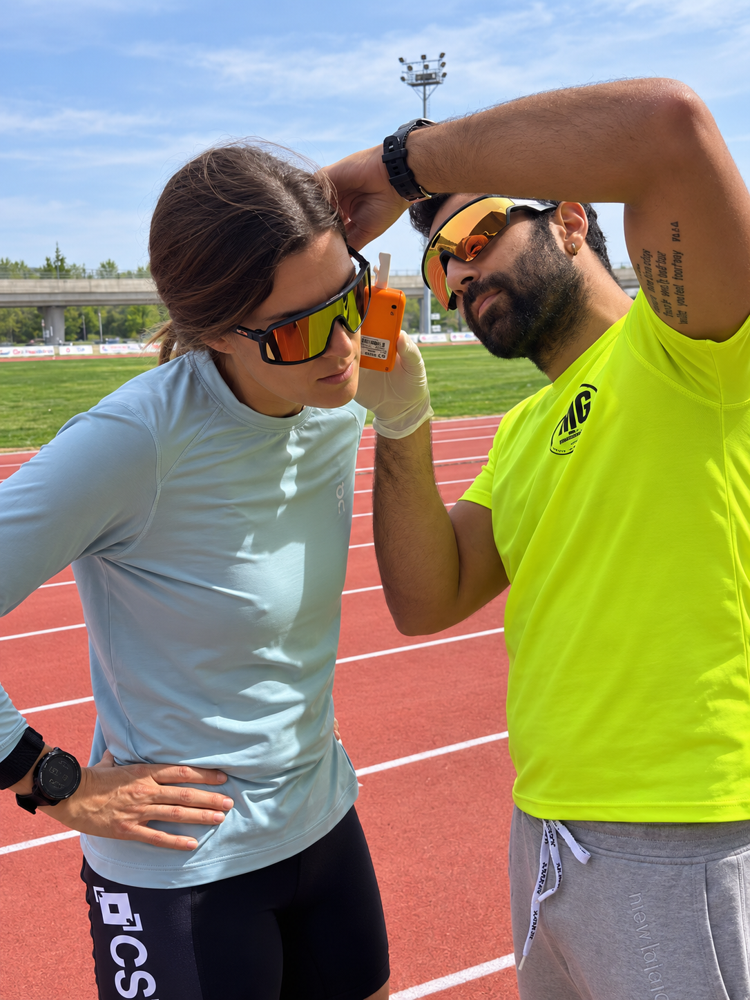

Test Funzionali & Lattato MADER
Valutazione fisiologica oggettiva per determinare con precisione chirurgica le tue zone di allenamento, monitorare i progressi e massimizzare il rendimento in gara.

Prelievo ematico capillare e analisi immediata della cinetica del lattato.
Il Test Incrementale MADER
Il Test di Mader è il protocollo scientifico di riferimento per l'endurance. Attraverso micro-prelievi di sangue capillare dal lobo dell'orecchio eseguiti al termine di ogni step incrementale di carico, misuriamo la concentrazione di acido lattico (mmol/L) in risposta all'intensità dell'esercizio.
Questo ci consente di tracciare la tua curva lattacidica individuale e individuare oggettivamente:
Dove e Come Svolgere il Test
Il test può essere svolto per la corsa, per il ciclismo (indoor su cicloergometro/rulli smart o outdoor) o per il nuoto.
Test del Lattato MADER Completo
Include analisi dati, stesura del referto tecnico e calibrazione zone di lavoro.
- Costo: 90 € per atleti che non hanno un piano coaching attivo con Michael
- Costo agevolato: 70 € per chi ha già un pacchetto atleta attivo (Base, Pro o Premium)
- Svolto in sede a Bergamo; possibilità di test in trasferta o presso società sportive su richiesta
- Consegna referto grafico con curve di lattato, FC max e individuazione delle andature target
⚠️ Requisito Medico: Il test di Mader richiede uno sforzo incrementale massimale ed è disponibile esclusivamente per atleti in possesso di certificato medico agonistico in corso di validità per la disciplina di riferimento.